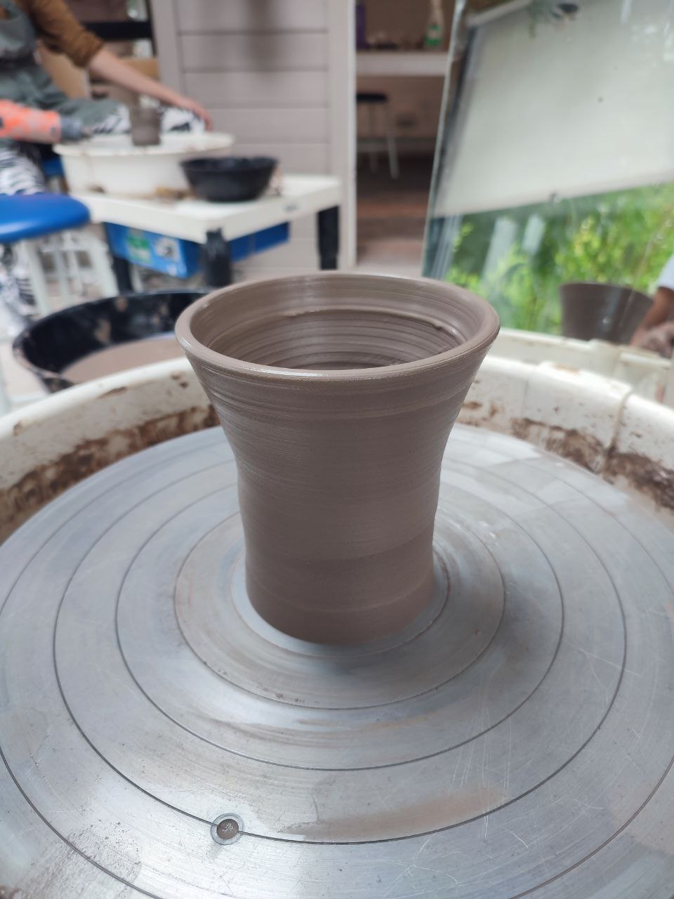

- What conversations are happening, and what conversations are being given funding and space?
- What is happening in industry?
- What are governments saying and doing?
- Who gets a say?
For my PhD, I want to engage with industry actors to learn what issues of responsibility they are dealing with in the creation and deployment of AI technologies. I'm keen to understand what things they problematise, what processes they use to combat these, and whether measures that they employ make a difference to the end products that they produce. I'm excited to have recently collected my empirical data. My chosen method of data collection is semi-structured interviews, and have two case studies: an AI company, and a medical AI company.
I'm lucky to be working with both Phyllis, a philosopher of science, and Jack, a sociologist of science. As their areas of expertise are different, they are able to give me rich reflections on my project. Having both of them on board is especially helpful as the space around AI and responsibility is an interdisciplinary one. With the help of my supervisors, I'm excited to be able to engage with literatures from various disciplinary backgrounds.
More broadly, I'm also interested in many other areas of Science & Technology ethics, and Science & Technology policy.
Recently, I have been a visiting researcher with Prof. Paul Nightingale at the Science Policy Research Unit (SPRU) at the University of Sussex. Before that, I was a regulatory intern at Aidence, where I worked with them on the implementation of ISO standards and the then incoming EU AI Act.
In my free time, I enjoy pottery, calligraphy, and lifting weights.
